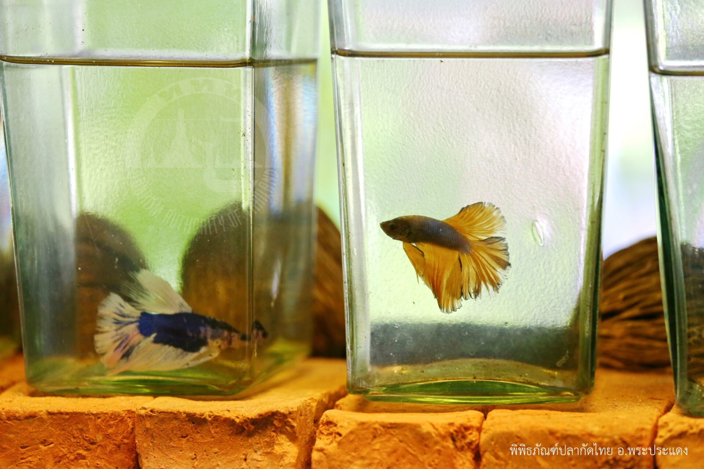

สถานที่
พิพิธภัณฑ์ช้างเอราวัณ
อีกหนึ่งที่เที่ยวสวยสมุทรปราการที่ต้องไม่พลาดไปแวะชมกันค่ะที่นี่เกิดขึ้นด้วยเจตนารมย์และอุดมคติของคุณเล็กวิริยะพันธุ์ซึ่งต้องการถ่ายทอดและปลูกฝังให้คนได้เข้าถึงศิลปะและศาสนาอันเป็นรากฐานของอารยธรรมเรียนรู้เรื่องราวของอดีตรู้จักคุณค่าของศิลปะที่เป็นมรดกตกทอดจากบรรพบุรุษ รวมถึงเผยแพร่ประเพณีและวัฒนธรรมของไทยนั่นเอง
เมืองโบราณ สมุทรปราการ
มาเที่ยวที่เดียวเหมือนได้ไปเที่ยวทั่วไทยกันเลยค่ะที่เมืองโบราณสมุทรปราการนี่เองที่เที่ยวทีได้จำลองเมืองไทยในอดีตรวบรวมศิลปะที่มีเอกลักษณ์โดดเด่นในยุคสมัยต่างๆตั้งแต่สมัยก่อนประวัติศาสตร์ทวารวดี ศรีวิชัย ลพบุรี ล้านนา ล้านช้าง สุโขทัย อู่ทอง อยุธยา ธนบุรี จนกระทั่งถึงรัตนโกสินทร์ มาไว้ในที่เดียว

พิพิธภัณฑ์ปลากัดไทย
ตั้งอยู่ที่ บางกระเจ้าค่ะโดยที่พิพิธภัณฑ์แห่งนี้จัดแสดงปลากัดสวยงามให้ได้ชมกันรวมถึงให้ความรู้เกี่ยวกับปลากัดสายพันธุ์ต่างๆจำนวนมากนอกจากนี้ยังมีสถาปัตยกรรมเรือนไทยประยุกต์ และเส้นทางศึกษาธรรมชาติให้ได้เที่ยวชมอีกด้วย
ป้อมพระจุลจอมเกล้า
อีกหนึ่งสถานที่ท่องเที่ยวห้ามพลาด ป้อมพระจุลจอมเกล้า หรือ ป้อมพระจุล เป็นป้อมซึ่งสร้างขึ้นในสมัยรัชกาลที่5เพื่อป้องกันการรุกรานจากต่างชาติโดยเราสามารถเข้าไปแวะกราบสักการะ พระบรมราชานุสาวรีย์พระบาทสมเด็จพระจุลจอมเกล้าเจ้าอยู่หัวซึ่งทรงฉลองพระองค์ในชุดจอมทัพเรือ รวมถึงเข้าไปชม พิพิธภัณฑ์ ศึกษาประวัติความเป็นมาของป้อมพระจุลจอมเกล้าและเหตุการณ์ในสมัย ร.ศ.112 ได้ค่ะ
ตลาดโบราณบางพลี
เป็นตลาดเก่าแก่ริมคลองสำโรง ที่มีอายุกว่า160ปีเลยทีเดียวค่ะใครที่อยากไปเที่ยวแล้วได้กลิ่นอายของวิถีชีวิตริมน้ำแบบดั้งเดิมในสมัยเก่าก่อนแนะนำให้มาเดินเที่ยวที่นี่ดูสักครั้ง